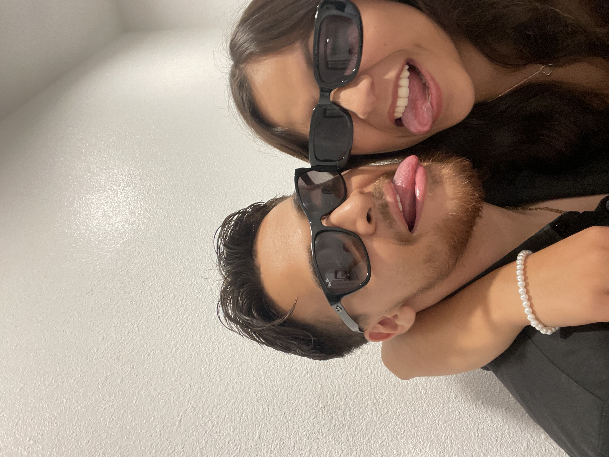

Damn i fell off real quick with these and it's been a minute since I've made one of these. But I remembered and decided right now would be be a good time to do this because I'm bored while you cook and after what happened yesterday I just wanted to say a couple of things. Like you said we're going to have our ups and downs throughout our relationship and it's scary for not only me but for the both of us when it comes to arguements like the one we had yesterday. It hurt a lil, actually nah monumental pause, that hurt a lot. Like Drake said "it's just words, but they cut deep and I hurt so bad." Yeah it was a painful to hear all of that, but what hurt the most is seeing you breakdown, and that's the last thing I ever want to do. So can we please from now on can we please just push each other to the side and not have to get to the level that we reached yesterday. We'll def still have our arguments and I fs always want to make it right with you, but I don't wanna hurt you and see like that. Like you tell me, you mean the world to me and seeing you like that was painful. I just want to remind you that I love you and I want to be your number one supporter and help you in any way possible. I'd do anything for you and I'm really sorry about anything that I've previously said or done. I'm genuinely sorry and I really wish I never did that. I hope I can still be your everything because I don't know what I'd do without you. I'll be here for 24/7 anyday anytime, well actually I might be busy most of the time but whenever I'm free and you need anythinh lmk. Everything we're doing rn is for our future, the fams, and the girls and I hope one day far off after graduation... that I can be living with you and see you burn another Dave's Killer Bread. I love you, don't every forget that, you mean so much me and I hope we can continue to push each other to success and happiness.
I love you,
Itzy Bitzy Spiderrr
